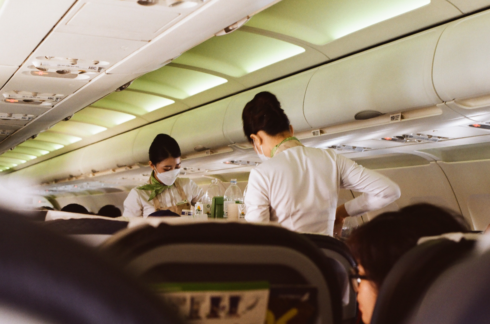

Curso de Piloto Comercial (CPL): Após a conclusão do PPL, os alunos podem seguir para o curso de Piloto Comercial, que os prepara para se tornarem pilotos profissionais. Eles aprendem habilidades avançadas de voo e navegação.
Curso de Piloto de Linha Aérea (ATPL): Este é um curso avançado para pilotos que desejam se tornar pilotos de linha aérea. Ele inclui treinamento intensivo em aeronaves maiores e uma gama mais ampla de conhecimentos e habilidades.
Curso de Comissário de Bordo: Este curso é projetado para pessoas que desejam trabalhar como comissários de bordo em companhias aéreas. Os alunos aprendem sobre segurança a bordo, atendimento ao cliente e procedimentos de emergência.
Curso de Mecânico de Aeronaves (AME): Este curso é para indivíduos interessados em se tornar mecânicos de aeronaves. Eles aprendem a manutenção, reparo e inspeção de aeronaves.
Curso de Despachante de Voo: Os despachantes de voo desempenham um papel crucial na gestão das operações de voo. Este curso ensina os alunos a planejar e coordenar voos, considerando fatores meteorológicos, regulamentações e logística.
Curso de Gerenciamento de Aeroportos: Este curso é voltado para pessoas que desejam trabalhar na gestão de aeroportos e terminais. Ele abrange aspectos como operações aeroportuárias, segurança e administração.
Curso de Controle de Tráfego Aéreo (ATC): Os controladores de tráfego aéreo são responsáveis por garantir a segurança e eficiência das operações de voo. Este curso ensina os alunos a coordenar a movimentação das aeronaves em solo e no espaço aéreo.
